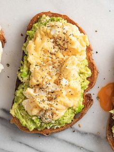

Avocado and Egg Toast

Heres a step-by-step guide for making Avocado and Egg Toast in your dorm, using an air fryer or microwave for the eggs:
Ingredients:
- 1 slice of bread (whole grain or your choice)
- 1/2 ripe avocado
- 1 egg (scrambled, fried, or boiled)
- Salt and pepper (to taste)
- Optional toppings: Red pepper flakes, everything bagel seasoning, or lemon juice
Materials:
- Air fryer (for toasting the bread and cooking the egg) or microwave (for eggs)
- Toaster (optional, for toasting bread if not using air fryer)
- Small bowl (for mashing avocado)
- Fork (for mashing the avocado)
- Knife (for cutting avocado)
- Spoon (for scooping out the avocado)
- Microwave-safe bowl (for scrambling eggs if using a microwave)
- Oven-safe ramekin or dish (for cooking a fried egg in the air fryer)
Steps:
- Toast the Bread:
-Preheat the air fryer to 370F.
-Place the slice of bread in the air fryer and toast for 2-3 minutes until golden and crispy.
Microwave (if no airfryer):
-Toast the bread using a toaster, or place it on a microwave-safe plate and microwave for 30 seconds to 1 minute (although it wont be as crispy).
- Prepare the Eggs:
Fried or scrambled egg (air fryer):
-For a fried egg, crack the egg into a small oven-safe dish or ramekin and place it in the air fryer at 350F for 5-6 minutes until the white is set.
- For scrambled eggs, whisk the egg in a microwave-safe bowl and microwave for 30 seconds, then stir and cook for another 30 seconds until fluffy.
-- If you prefer a boiled egg, place it in a microwave-safe bowl with water and microwave for 4-5 minutes. Peel the shell when cooled.
- Mash the Avocado:
-Once the eggs are almost done, place a slice of cheese on top of each egg. Cover the pan for a minute to help the cheese melt.
- Assemble the Sandwich:
-Cut the avocado in half, remove the pit, and scoop the flesh into a small bowl.
-Mash the avocado with a fork and season with salt and pepper (add optional lemon juice for extra flavor).
- Assemble the Toast:
-SSpread the mashed avocado evenly over your toasted bread.
-Place the cooked egg (scrambled, fried, or sliced boiled egg) on top of the avocado.
- Season and Serve:
Sprinkle a bit more salt and pepper on top.
-Optional: Add toppings like red pepper flakes, everything bagel seasoning, or a drizzle of olive oil for extra flavor.
Enjoy your healthy and easy avocado and egg toast! Its a great breakfast or snack.